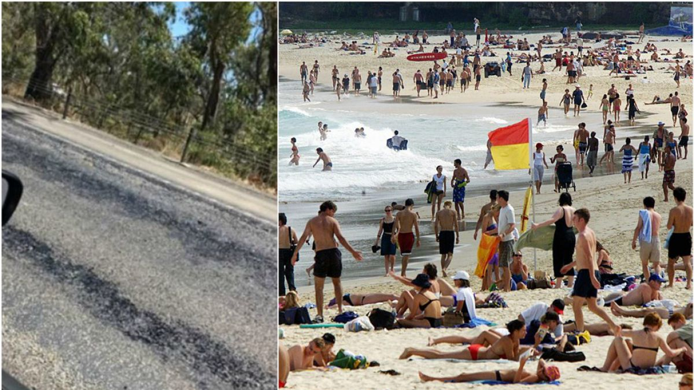

Sidney es la Capital de Australia, además es la ciudad más poblada de Australias y Oceanía. Con aproximadamente 4 millones de habitantes, esta ciudad tiene un clima soleado mediterráneo con días soleados por almenos 340 días del año. Los veranos son tibios a calurosos y los inviernos son templados, con precipitaciones que se distribuyen uniformemente durante el año. En verano (diciembre a febrero), la temperatura máxima promedio es de aproximadamente 26 °C. Esta época también puede ser húmeda, con un promedio de humedad del 65%. La temperatura máxima promedio en los meses de invierno (junio a agosto) es de unos 16 °C. Las lluvias en Sydney son más frecuentes entre marzo y junio. Aquí encontrará información sobre la temperatura, las precipitaciones y las actividades de temporada para planificar sus vacaciones en Sydney.
El verano (diciembre a febrero) en permite disfrutar de la increíble vida al aire libre. Enero suele ser el mes más caluroso en Sydney y la temperatura promedio varía entre 18,6 °C y 25,8 °C.
Aunque este año en particular al este de Australia, y Sídney se reportó un verano infernal con temperaturas máximas que no se registraban desde hace 78 años, de aproximadamente 47°C. Llegando al punto de incluso derretir el asfalto
En Australia.com Puedes encontrar toda la información con respecto a Australia, no sólo sobre el clima en Sidney, sino información reelevante a todo lo que quieras de este país.
Seminario Gráfica Computacional I 2018, Primer Semestre → Clase 1 → Viernes 16 de marzo